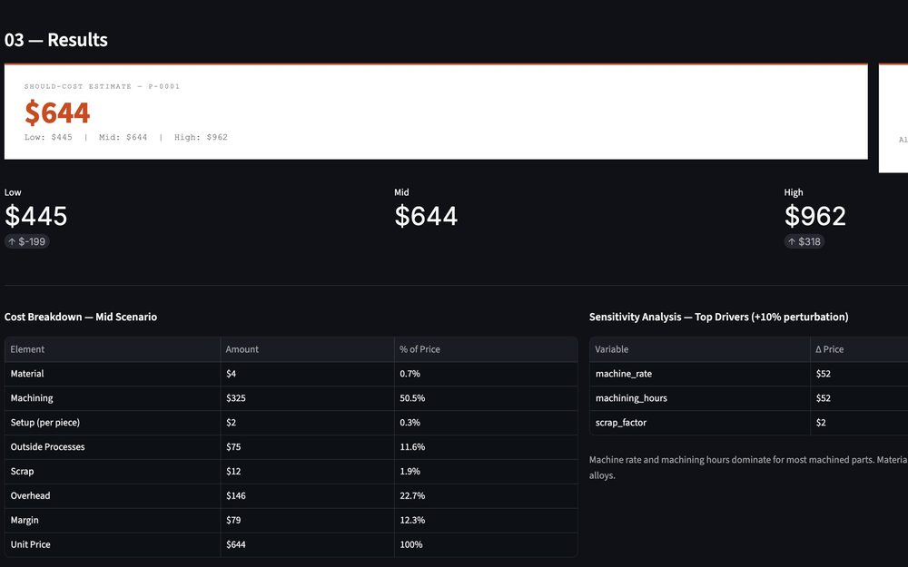
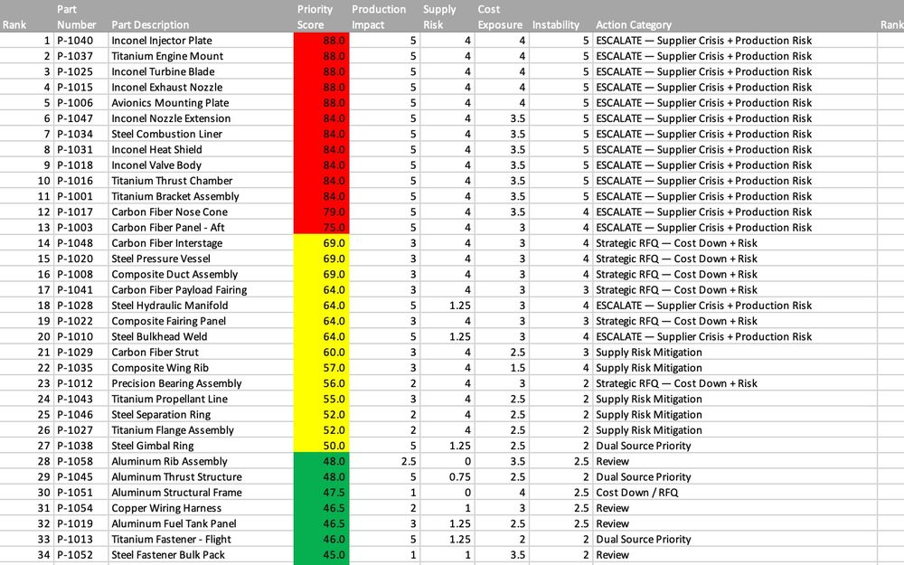
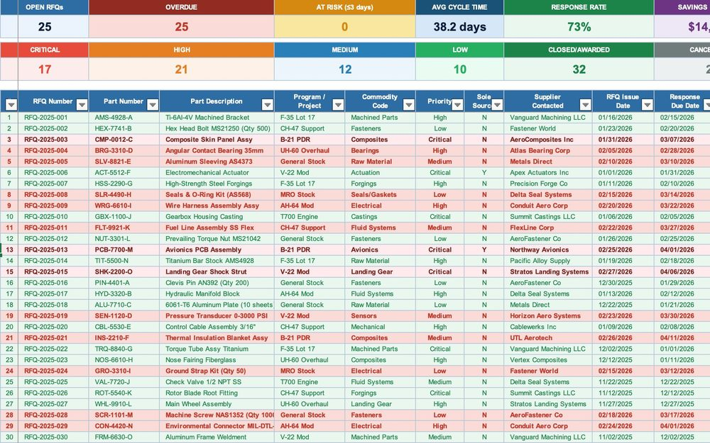
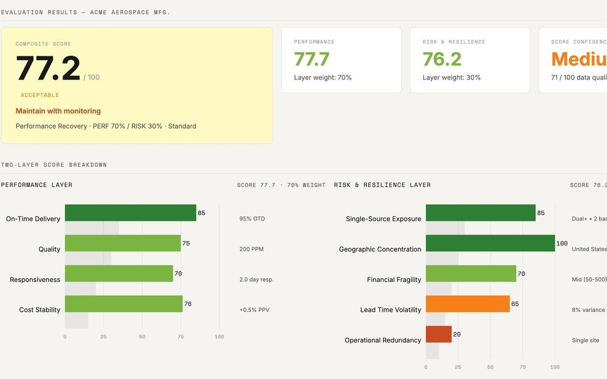
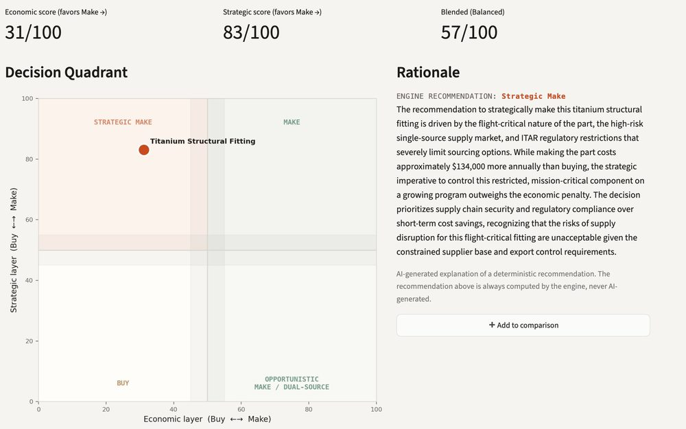

Parametric Should-Cost Model
Estimates a price range for machined parts, breaks down the costs, and shows which inputs move the estimate.
Screenshot

Aerospace · Supply Chain · Technology
I’m a Supply Chain Program Manager at Blue Origin. In my independent work, I build software and analytical tools that make operational decisions easier to understand and defend.
Explore my workFive projects for deciding which parts to prioritize, managing RFQs, estimating costs, evaluating suppliers, and weighing whether to make or buy.
Estimates a price range for machined parts, breaks down the costs, and shows which inputs move the estimate.

Ranks parts by production impact, supply risk, cost exposure, and instability so sourcing teams can focus on the issues that matter first.

Tracks RFQs from issuance through award and surfaces overdue responses, cycle time, supplier response patterns, and savings against targets.

Scores supplier performance and risk separately and applies explicit compliance rules to the final recommendation.

Compares in-house manufacturing and external sourcing across economic and strategic factors, with explicit rules for exceptions.

My background spans aerospace sourcing, supply chain analytics, and procurement research. Before Blue Origin, I worked on Starlink propulsion sourcing at SpaceX and supply chain strategy and analytics at REI.
I graduated from Western Washington University in June 2026 with a B.S. in Manufacturing & Supply Chain Management and a minor in Business Analytics. At WWU, I co-authored research on public-sector IT procurement across all 50 states.
Outside work, I’m interested in workflow design, process automation, and where AI can help make useful tools easier to build.